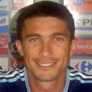

El DT de "Los Murciélagos" nos explica cómo la confianza,
el desafío de la autosuperación y el trabajo en equipo pueden permitirnos
alcanzar el éxito en cualquier objetivo que nos
propongamos.

Gonzalo Vilariño
Preparador Físico de Alto Rendimiento.
Profesor de Educación Física. Abogado.
Fue Preparador Físico y DT de "Los Murciélagos",
Selección Argentina de Fútbol Sala para Ciegos (2001-2008),
Campeones Mundiales 2006, entre muchos otros títulos.
Preparador Físico de la Selección Argentina de Remo (1996-2003).